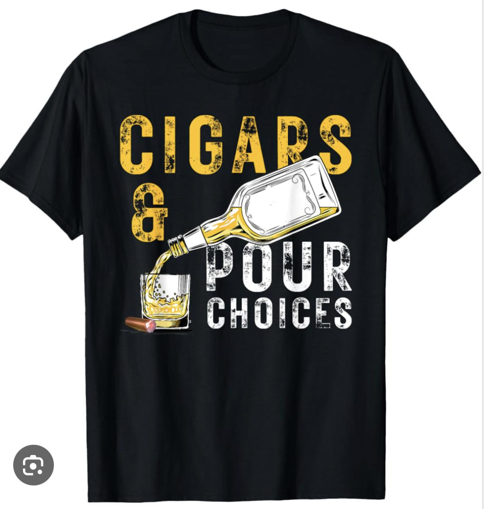

1.The Dominican Republic is the largest producer of premium cigars, known for creating smooth and mild blends favored by many enthusiasts.

Nicaraguan cigars have gained popularity for their bold, spicy profiles, with rich tobacco grown in volcanic soil that enhances flavor.
2.Christopher Columbus and his crew introduced cigars to Europe after encountering tobacco during their expeditions to the Americas in the 15th century.
Cigars date back to ancient civilizations, with early versions smoked by the Mayans and indigenous peoples of the Caribbean over a thousand years ago.